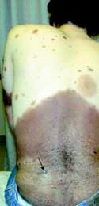
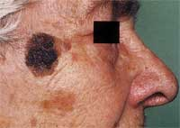
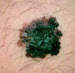
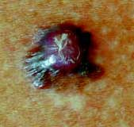
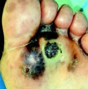
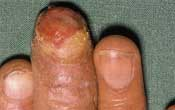
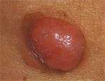
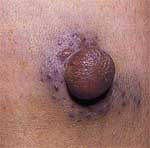
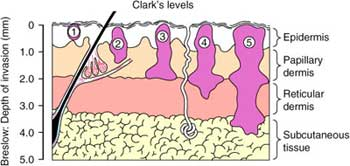
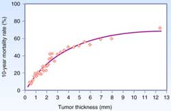
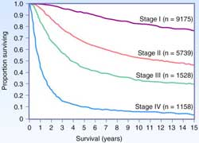
| Stage |
Primary |
N |
M |
| 0 |
Tis |
0 |
0 |
| IA |
T1a |
0 |
0 |
| IB |
T1b / T2a |
0 |
0 |
| IIA |
T2b / T3a |
0 |
0 |
| IIB |
T3b / T4a |
0 |
0 |
| IIC |
T4b |
0 |
0 |
| IIIA |
T1-T4a |
N1a / N2a |
0 |
| IIIB |
T1-T4b T1-T4a T1-4a/b |
N1a / N2a N1b / N2b N2c |
0 0 0 |
| IIIC |
T1-4b T1-4b Any T |
N1b N2b N3 |
0 0 0 |
| IV |
Any T |
Any N |
1 |
| Stage |
Ulceration |
10-yr Survival |
| IA |
Yes or No |
90% |
| IB |
Yes or No |
80% |
| IIA |
Yes or No |
65% |
| IIB |
Yes No |
50% 55% |
| IIC |
Yes or No |
35% |
| Stage |
Ulceration |
N-stage |
5-yr Survival |
| IIIA |
No No |
N1a N2a |
70 60 |
| IIIB |
Yes Yes No No |
N1a N2a N1b N2b |
55 50 55 45 |
| IIIC |
Yes Yes Yes or No |
N1b N2b N3 |
30 25 30 |
| Stage |
1-yr Survival |
| M1a |
60% |
| M1b |
55% |
| M1c |
40% |
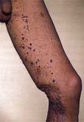
Melanoma
What
is a melanoma
• malignant neoplasm arising from melanocytes
•
Overall
4th most common cancer
•
3rd
most common in women (After breast and colorectal)
•
3rd
most common in men (after prostate and colorectal).
•
median thickness at diagnosis 0.75mm
What
is the incidence of melanoma
•
increasing
• 4-5% of all skin malignancies
•
males>females
•
highest incidence in Australia
• males 410.4 per 1,000,000 (1 in 25 before age 75)
• females 310.1 per 1,000,000 (1 in 35 before age 75)
• median age late forties
• 80% present between age 25-65
What
are the risk factors for melanoma
|
Risk factor |
|
|
Genetic |
|
|
Strong
family history >3 first degree relative |
35-75 |
|
Weak
family history |
3 |
|
Naevi |
|
|
Multiple
benign naevi (>100) |
11 |
|
Multiple
atypical naevi (>5) |
11 |
|
Previous skin cancer |
|
|
Melanoma |
8.5 |
|
Non-melanoma |
3 |
|
Immunosupression |
|
|
Transplant |
3 |
|
AIDS |
1.5 |
|
Surrogates for sun sensitivity |
|
|
Type
1 skin (Burns without tanning) |
1.7 |
|
Freckling |
2.5 |
|
Blue
eyes |
1.6 |
|
Red
hair |
2.4 |
|
UV exposure |
|
|
History
of blistering sun burn |
2.5 |
|
Actinic
skin damage |
2 |
|
|
|
•
age (risk increases exponentially)
What
are the genetic risk factors
•
germ line mutations in CDKN2A gene encoding for tumour suppressor
proteins p16 and p19 (chromosome 9p21) – accounts
for 0.5-2% of melanoma. Risk conferred by this mutation is 10-20
fold.
• xeroderma pigmentosum
(deficient repair of DNA photoproducts induced by
UV radiation, increased risk melanoma, SCC, BCC)
FAMMM syndrome – Familial atypical multiple mole melanoma
syndrome (AD)
— Large
dsyplastic nevi in sun-protected areas. Very high life-time risk
melanoma.
What
is the dysplastic naevus syndrome
• autosomal dominant, high penetrance
• chromosome 1p32, 1p36
•
dysplastic naevi
• large
>5mm
•
variable colour
•
indistinct border
•
± centrally raised
• trunk > limbs > face
• usually have > 100 melanocytic naevi, some
large and atypical
•
groups of patients at increased risk
• numerous dysplastic
naevi (relative risk of melanoma 50x)
• dysplastic naevi with
family history of melanoma (risk approaches
100% - relative risk 150x)
•
increased risk of
•
melanoma
•
pancreatic cancer
•
myeloma
•
breast cancer
What
is the management of dysplastic naevus syndrome
• full body photographs 6 monthly
• screening from puberty onwards
• excision biopsy of any lesions that change
clinically
• prophylactic excision not recommended
What
is a Spitz naevus
• spindle cell naevus
• well circumscribed and raised
• most common in young adults
• complete excision recommended
What
are congenital melanocytic naevi
•
melanocytic naevi present at birth
•
histological features
•
naevus cells present in lower two-thirds of dermis
•
naevus cells between collagen bundles singly or in short files
•
naevus cells involving appendages
• small lesions
• <1.5cm
• 1% of births
• no increased malignant
potential
• medium lesions
• 1.5 – 20cm
• malignant potential uncertain
• excise during teenage
years
• giant congenital naevi
• >20cm
• crude risk 3%
• 70% of melanomas develop
before puberty
• naevi on head and neck at risk of neurocutaneous
melanosis (MRI
for screening)
•
5-8% risk of melanoma
What
is the management of congenital melanocytic naevi
• monitor all congenital lesions >20cm and
possibly medium lesions for person’s lifetime
• excision biopsy of suspicious area
• surgical excision where acceptable cosmetic
outcome can be achieved (tissue expanders)
What
is the role of sun exposure in development of melanoma
•
associated with intense intermittent exposure
• BCC/SCC occur most commonly in maximally
sun-exposed areas (face, back of hands, forearms
• Intermittent exposure areas – back (men), lower
legs (women)
•
Persons with indoor occupations who limit sun-exposure to
weekends and vacations
•
Associated with exposures inducing sunburn
•
5 or more severe sunburns during adolescence doubles the risk
•
Ultraviolet radiation
• UV-B (290-320 nm)
•
Responsible for formation of principal
DNA lesions
(cyclobutane
pyrimidine dimers and pyrimidine pyrimidone photoproducts)
•
Incorrect repair leads to mutations
• UV-A (320-400 nm)
•
More abundant in sunlight than UV-B
• Causes oxidative DNA damage that is
potentially mutagenic
•
Contributes to immunosuppression in mice
What
are the prevention strategies for melanoma
•
Sun protection behavior: Shade, sun protective clothing, peak
hours of sun intensity avoided, sunburn prevented, sun screen
(No evidence that sunscreen is effective).
•
Population based screening – population screening is not
recommended.
•
High risk individuals: Increased surveillance and prevention
programs – education about sun protection and features of
melanoma, routine self or partner examination, regular screening
by dermatologist using whole body photography and dermoscopy as
required.
Describe
melanocyte response to UV damage
• melanocytes are more-resistant to UV-damage
induced apoptosis than basal (dividing) keratinocytes
•
UV-damage induces changes
•
increased production of melanin with resultant less exposure to
UV
•
increased ability to repair UV damage
•
melanocyte division
• keratinocytes are damaged but undergo apoptosis
and don’t perpetuate mutations
• melanocytes are damaged but tend to survive and
perpetuate mutations, encouraged by the post-exposure
melanocyte division
What
are the layers of the skin (epidermis?)
• Stratum basale
• Stratum spinosum (prickle cell)
• Stratum granulosum (Granular) Intracellular
granules which contibute to keratinization
• Stratum Lucidum – present only in thick skin
• Stratum Corneum
Where
are melanomcytes
•
scattered in the basal layers in contact with the
basement membrane.
•
The ratio of melanocytes to basal epithelial cells is 1:5 to
1:10.
• This ratio is similar in all races. Differences
in skin colour are due to amount of melanin produced.
•
The melanin is synthesised from tyrosine and accumulates in
granules called premelanosomes. These mature to form melanosomes which are transferred via the long cytoplasmic processes of the melanocyte to the
keratinocytes.
•
The epithelial cells contain much more
melanin than melanocytes.
• Sunlight promotes melanin synthesis and darkening
of previously synthesized melanin.
What
is the immunohistochemical marker for melanoma
• S100
What
are Clark’s levels
• I – confined to
epidermis
• II – papillary dermis
• III –
papillary-reticular junction
• IV – reticular dermis
• V – subcutaneous tissue
What
are the types of melanoma
•
lentigo maligna
•
superficial spreading (most common)
•
nodular
•
acral-lentiginous
•
amelanotic
•
desmoplastic
What
are the examination features of a melanoma
•
Asymmetry
•
Border
(irregular but well defined, dysplastic
naevus ill-defined)
•
Colour
variation
•
Diameter
(>6mm)
•
Elevation
What
are the sites of development of melanoma
•
skin
•
mucous membranes (nose, mouth, oesophagus, gall-bladder,
urethra, anus, vulva,
vagina)
•
genitalia
•
ano-rectum
•
primary visceral lesions (oesophagus, lung, adrenal)
•
dura, meninges
•
ocular (most common, 4%)
What
is the differential diagnosis of melanoma
• pigmented lesions
•
melanoma
•
dysplastic naevus
•
Spitz naevus (children)
•
pigmented BCC
•
blue naevus
•
haemangioma
•
pigmented seborrhoeic keratosis
•
rare adnexal tumour
•
dermatofibroma
•
spindle cell tumour
• amelanotic lesions
•
amelanotic melanoma
•
dermatofibroma
•
desmoplastic melanoma
•
BCC
•
spindle cell tumours e.g. Merkel
What
are the histological features of melanoma
•
Melanoma cells are larger, have large irregular nuclei,
chromatin clumped at the periphery of cell membrane and
prominent nucleoli.
•
Melanin either in
H&E or with a Fontana stain can easily identify melanotic
melanomas.
•
Immunohistochemistry can
be used to confirm that cells are melanoma, particularly when
amelanotic.
Melan A, S-100 protein, and HMB-45 .
•
The sensitivities of S-100, HMB-45, and Melan-A are 97%, 75%, and 96% respectively.
What
are the growth phases of melanoma
• Radial growth – horizontal growth within the epidermal and
superficial dermal layers. Not
tumorogenic when implanted into non-immune mice.
• Vertical phase – growth into
deeper dermal layers often associated with loss of cellular
maturation and cells becoming smaller. These cells grow
autonomously in cell culture and are
tumorogenic when implanted into non-immune mice.
What
are the clinical features of a melanoma
•
A – Assymetry
•
B – Border irregularity
•
C – Colour variagation
•
D – Diameter >6mm
•
E – elevation,
evolution, examination for other lesions
•
Suspicion should be
aroused by any significant change in an existing naevus or
other skin lesion.
What
history is important in the assessment of a pigmented lesion
•
change in size
•
change in colour
•
change in surface characteristics
•
itch
•
bleeding
•
family history of melanoma
•
past history of melanoma or other skin cancer
What
proportion of melanoma are non-pigmented
• 5% are non-pigmented
• This is more common amongst nodular melanoma
What
are the clinical types of melanoma
•
Superficial
Spreading – 65% Most common in
women
•
Nodular – 25% pure vertical growth
phase ab intio.
•
Lentigo
Maligna
Melanoma – 5%
Slowest growing with best prognosis. (melanoma in situ)
•
Acral
Lentiginous – 5% commonest in unpigmented parts of pigmented skin
(Lentigo=pigmented
lesion; Acral = limb)
What
do you do when unsure
• When the
diagnosis is uncertain the safest course of action is an excisional
biopsy with 2mm margin.
•
Longitudinal excision on limb facilitates later
re-excision if required.
What
about if the diagnosis is clinically certain
•
Excisional biopsy with narrow margin is still appropriate so
that subsequent definitive treatment is not compromised.
•
Primary closure is preferred and skin flaps and grafts should be
avoided
What
do you do when a pigmented lesion is very large
• Incisional biopsy – used only where
an excisional biopsy cannot be achieved
•
If used, punch biopsies should be performed at
the most raised or darkest area of the lesion.
• Shave biopsy
•
Partial biopsy may not be
representative of the lesion and need to be interpreted
in the light of clinical
findings
•
Partial biopsy is clinically indicated
only in selected circumstances – larger facial or acral
lesions
or where suspicion of melanoma is low.
What
is dermoscopy
•
Dermoscopy, or epiluminescence
microscopy (ELM), can aid identification of the early phase of
melanoma by lens examination under a liquid interface
(oil/alcohol).
•
Evaluates colors and
microstructures of the epidermis, the dermoepidermal junction,
and the papillary dermis not visible to the naked eye.
•
Dermoscopy
by skilled practitioners improved diagnostic accuracy, but in
the hands of untrained or less experienced examiners is no
better than clinical inspection.

What
are the histological determinats of prognosis
•
The four common clinical
subtypes have a biological prognostic behavior (risk
mets/death) which correlates with Breslow depth.
Histological determinants of poor prognosis:
• Breslow depth (more
reliable) or Clark level
• Ulceration – most
significant next to depth
• Regression: worse prognosis
than apparent
• Mitotic activity
• Tumor infiltrating
lymphocyte response
• Neural or vascular
infiltration
How
is Breslow depth measured
•
The Breslow depth is
measured from the granule cell
layer (just below Stratum Corneum) of the epidermis to the
deepest point of invasion using eyepiece graticule.
This is the most accurate and reproducible measure of local
stage.
 •
Tumor thickness is the
most accurate predicator of prognosis. Mortality reaches a
plateau at about 8mm. Even up to 13mm thickness mortality is
not 100%.
•
Tumor thickness is the
most accurate predicator of prognosis. Mortality reaches a
plateau at about 8mm. Even up to 13mm thickness mortality is
not 100%.
What
is Clark level
—
I
– intra-epidermal
—
II
– Papilary dermis
—
III
– papillary-reticular dermis junction
—
IV
- Reticular dermis
—
V
– Subcutaneous fat
• Clark level of invasion is
significant in lesions <1mm thick where lesions
• Clark level II/III are T1a
• Clark level IV/V are T1b
What
are the important features of a histopathology report
Essential
• Breslow thickness
• Clark level
• Mitotic rate/mm2
• Ulceration
• Margins
Other
factors which are of prognostic or other value include
• Vascular invasion,
• Local metastasis,
microsatellites, in-transit metastasis,
• Tumour-infiltrating
lymphocytes, regression, desomplasia, neurotropism, associated
benign melaoytic lesions, solar elastosis, predominant cell
type,
• Growth pattern
(pagetoid, lentiginous and mixed) and growth phase
• Immunohistochemistry.
 What is the staging of melanoma
What is the staging of melanoma
T:
T1
- ≤1mm (a- without ulceration and level II/III, b- with
ulceration or level
IV/V)
T2
– 1.02 – 2.0mm (a- without ulceration, b- with ulceration)
T3
– 2.01 – 4.0mm (a- without ulceration, b- with ulceration)
T4
- >4.0mm (a- without ulceration, b- with ulceration)
N:
N1
– 1 node (a- micrometastasis, b- macrometastasis)
N2
– 2-3 nodes (a- micrometastasis, b- macrometastasis, c-
in-transit mets without
metastatic
nodes )
N3
– 4 or more nodes, matted nodes, in-transit/satellite mets with
metastatic nodes
M:
M1a
– distant skin, subcutaneous or nodal mets, LDH normal
M1b
– lung metastases, LDH normal
M1c
– all other visceral mets with normal LDH, any mets with LDH
elevated
What
is in transit metastasis
•
Any skin or subcutaneous metastasis that are > 2cm from the primary lesion but not beyond the regional nodal basis
What
are satellite lesions
•
Skin or subcutaneous lesions < 2cm of the primary tumour
that are considered intra-lymphatic
extension of the primary mass.
Both
in transit and satellite metastasis are a component of nodal
staging and assigned as N2c in the absence of nodal metastasis.
The
prognosis is similar to that of multiple nodal metastasis.
Patients
with combined in transit/satellite and nodal metastasis and
nodal metastasis have a worse prognosis than either alone (N3).
What
are the appropriate investigations for patients diagnosed with
melanoma
• STAGE
I/II:
Extensive imaging studies (CT, PET, PET/CT) are not recommended since the yield is extremely low and the false
positive rate is unacceptably high. Even the use of routine
chest X-ray cannot be recommended in asymptomatic patients
• STAGE
III:
In patients with advanced regional disease for whom surgery is
being considered, PET/CT scan is recommended, as the
yield is higher than with CT (chest/abdomen/pelvis) scans alone. The detection of
distant metastasis in patients with macroscopic stage III
Cutaneous melanoma is 20%; the false positive rate is 10%.
For a patient with
a positive sentinel node in the absence of symptoms of
metastatic disease, the true positive rate of radiological
investigations is 2%. Routine radiological investigations are
not recommended.
• STAGE
IV:
For patients with symptoms suggestive of metastasis
investigations should include LDH, CT,
MRI brain and PET. For patients with a single site of
metastasis disease who are being considered for surgical
resection, PET/CT is recommended to complement conventional
imaging studies (MRI scan of the brain and CT scans of the chest
and abdomen and pelvis) prior to surgery to exclude other sites
of metastases.
What margins are appropriate for melanoma
|
Tumor Thickness (mm) |
Margin (cm) |
|
In situ |
0.5 |
|
<1 |
1 |
|
1-4 |
1-2 |
|
>4 |
2 |
•
no evidence that <1cm offers additional benefit for long term
survival but may decrease
local
recurrence
•
The margin should be measured clinically from the edge of the
melanoma before excision
•
The excision is down to but not
including the deep fascia
•
A flap repair or skin graft is sometimes necessary
This
is based on evidence from four RCT and a number of
retrospective studies
WHO melanoma group
•
612
patients; <2mm thick; 1-cm or
3-cm margin of excision.
•
There
was no significant difference in survival between the 1- and
3-cm surgical margin groups.
•
No
local recurrences among patients with primary melanomas thinner
than 1 mm.
•
4
local recurrences in the 100 patients with melanomas 1 to 2 mm
thick, all in patients with 1-cm margins.
•
Narrow excision margin (i.e., 1 cm) is safe for
thin (<1 mm) melanomas.
French Trial: 319 patients lesions at least 2
mm thick
•
5-
and 2-cm margins
•
No
differences in local recurrence rate or survival between the two
groups.
United Kingdom Trial: 900 patients with
melanomas at least 2 mm thick
•
1-
and 3-cm margins
•
1-cm
margin associated with a significantly increased risk of
locoregional recurrence
•
Overall
survival was similar in the two groups.
Intergroup Melanoma Committee
•
Melanoma
1-4mm
•
2-
and 4-cm margins of excision
•
No
difference in local recurrence
•
46%
in the 4-cm group required skin grafts
•
11%
of patients in the 2-cm group did (p <0.001).
•
These data support the use of a 2-cm margin for
intermediate-thickness lesions.
For thick melanoma
•
Optimal
margin for melanomas >4 mm is still unknown.
•
A
retrospective review of 278 patients showed width of the
excision margin (<2 cm vs. >2 cm) did not significantly
affect local recurrence, disease-free survival, or overall
survival rates after a median follow-up of 27 months. (Heaton
KM, Sussman JJ, Gershenwald JE, et al. Surgical margins and
prognostic factors in patients with thick (>4 mm) primary
melanoma. Ann Surg Oncol 1998)
What is the significance
of lesions >1mm thick
•
These are the patients where
SLNB should be considered
• SLNB should be performed before the wide-local
excision
•These patients should be referred to a specialist
melanoma centre
What
is the risk of lymph node metastasis in melanoma
• <1mm – rare
• 1.5-4.0mm – 25%
• >4mm – 60%
What
is the role of lymph node dissection in melanoma
•
10%
of patients present with clinically positive nodes
•
5%
of patients present with distant metastasis
•
85%
present with clinically negative nodes
What
is management of clinically positive nodes
•
Palliation and sometimes survival advantage
can be achieved in patients with clinically involved regional
metastases through therapeutic lymph node dissection (TLND).
•
This is beneficial only if distant metastatic
disease is excluded (CT/PET).
•
FNA
or Core BX under US guidance (if required) yield a diagnosis
with clinically enlarged regional nodes.
•
Open
biopsy is rarely warranted but if used the incision should be
placed so that it can be excised with the incision used for
radical lymphadenecomy.
•
For patients with a positive SLN biopsy TLND is
recommended.
What
is the rationale for elective lymph node dissection
•
Lesions
less than 1mm have low risk of nodal involvement (<3%)
•
For
lesions >4mm depth there is a higher risk of distant
metastasis determining prognosis.
•
Elective Lymph Node Dissection (ELND) was proposed
for patients with intermediate thickness lesions (1-4mm) with
clinically negative draining nodal basin.
•
High morbidity and 80% negative
•
Four
prospective RCT conducted comparing ELND to surgery delayed
until clinical recurrence.
• no evidence of survival benefit for ELND for
clinically negative nodes in prospective trials
1.
WHO Melanoma Trial I (Veronesi U.N Engl J Med.
1977;297:627-630).
-
RCT of 553 pts treated by WLE +/- ELND.
-
No OS difference
2.
Mayo Clinic (Sim FH. Mayo Clin Proc. 1986;61:697-705).
-
Similar design, no OS difference.
3.
Intergroup Melanoma Trial (Balch CM. Ann Surg Oncol. 2000;7:87-97).
-
RCT of 740 pts with 1-4 mm melanomas
-
Compared WLE +/- ELND.
-
At 10 yrs non-significant diff OS (73% vs 77% ELND; p = 0.12).
-
Significant difference was found in unplanned subset analyses:
i)
< 60 yrs : 74% à
81%
ii)
1-2mm thick: 80% à
86%
iii)
Non-ulcerative: 77% à
84%
4.
WHO Melanoma Trial 14 (Cascinelli N. Lancet. 1998;351:793-796).
-
RCT
of pts with trunk melanomas > 1.5mm thick to WLE +/- ELND.
-
Trend
toward improved survival in the ELND arm (p = 0.09).
5.
Meta-analysis -
The lack of survival benefit of ELND is confirmed by
meta-analysis. Arch Surg. 2002;137:458-461

• Thus ELND is not recommended regardless of
breslow thickness
What
is SLNB
•
Biopsy of first node(s) to receive drainage directly from the
primary tumour site.
•
Indication for SLNB –
– melanomas >1mm thickness, or
– <1mm thickness but higher mitotic rate(≥5/mm
2), Clark level 4-5 or ulceration and patient <60 yrs.
•
Positive
SLNB should have completion dissection and consideration of
systemic adjuvant treatment
What
is the evidence of benefit for SLNB
Multicentre Selective Lymphadenectomy Trial
- Randomised
1327 patients to SLNB or observation.
- Completion
lymph node dissection for positive SLN
-
Intermediate thickness melanoma (1.2 – 3.5mm)
At
5yrs, no difference in OS, but improved DFS (78% vs 73%; p <
0.05)
-
5yr survival higher in SLN group with +ve nodes, compared to pts
who relapsed on observation (72% vs 52%).
•
Incidence
of positive SLN was 16%, and rate of nodal relapse in observed
group was 16%.
•
-
Mean number of nodes in SLN group was 1.4, and observation group
3.3, suggesting disease progression during observation.
•
-
3.4% of pts with negative SLNB subsequently relapsed in the
regional LNs
What
proportion of SLN positive patients had positive non-sentinel
lymph nodes
•
Less than 20%
•
MSLT-II
examines the benefit of completion LND in SLND positive patients
What
is the technique of sentinel node biopsy on melanoma
• Performed prior to wide local excision of
melanoma scar
•
99Tm-sulfur colloid (about 3 hours pre-op)
•
injection into dermis (not subcutaneous) in 4 quadrants around
the melanoma excision scar to map dermal lymphatic drainage
•
preoperative lymphoscintigraphy
•
The nuclear medicine physician marks the location(s) of highest
isotope uptake as the SLN(s) on the skin.
• patent blue V is injected
intradermally in 4 quadrants around the scar by the surgeon
immediately prior to surgery
•
Any blue and hot nodes are removed through a small incision and
sent histology using H&E and S-100, HMB-45 and Melan-A. Frozen section is not used because of the
false negative rate of 10%.
•
Intra-operative mapping is achieved by hand held gamma probe and
visual staining of blue dye.
•
95%
success with both lymphoscintigraphy and blue dye
•
Only
80% when either alone used
•
After SLN removal, resection bed count should decrease
to <10% of hottest node.
•
focused pathologic evaluation
•
multiple sections
•
immunohistochemical (S-100, HMB-45)
•
PCR
What
is the line of Sappey
•
An imaginary circumferential line around L2 vertebra
posteriorly to umbilicus anteriorly
•
As originally described
by Sappey lesions above this line
drain to axillay nodes and below to inguinal.
•
Drainage across the
midline is quite common
•
It is now clear that
there is a zone of ambiguity
straddling Sappey’s line by 10cm where lymphatic drainage is
unpredictable.
What
are the discordance rates for lymph
drainage identified by lymphoscintigraphy
• 37% head and neck
• 25% trunk
• 14% upper limb
• 5% lower limb
What
is the survival after therapeutic node dissection in melanoma
• 10YS 50% if only one node involved
• 10YS 30% if 2 or 3 nodes involved
What
is the role of interferon in melanoma
•
high dose interferon-α2b
•
ECOG trials E1684, E1690 and E1694
• improve survival by 10%
What
is the role of radiotherapy to the site of the primary
•
Rarely indicated as low recurrence rates with
surgery alone
•
Exception:
–
Desmoplastic neurotopic histology
–
Close or positive margins where re-excision
impossible
–
Primary lesions with high risk features such as
>4mm or with satellite lesions.
What
is the role of radiotherapy to nodal basins
•
Adjuvant
postoperative radiotherapy may be offered after TLND to
decreasing local recurrence after LN dissection if:
1.
ECE (60% LR)
2.
> 4 nodes
3.
Bulky LN > 3cm
4.
Cervical LN’s
5.
Recurrent nodal disease
6.
Positive SLNB and completion dissection not planned
7.
Positive margins
In
what other circumstances may radiotherapy have a role
•
postop adjuvant XRT for mucosal
melanomas
•
primary XRT for unresectable lentigo
maligna
•
XRT for extensive cutaneous metastases
• cerebral and bone metastases
What
is the role of surgery for metastatic melanoma
•
surgery should be considered for isolated
melanoma metastases to lung, brain and peritoneal cavity
What
is the role of adjuvant systemic therapy
•
There
is level I evidence that adjuvant IFNa
is of benefit for high risk patients:
•
Primary tumour >4mm
•
node positive
•
DFS
benefit of 9% at 5 yrs, and one RCT demonstrates an OS benefit
of 9% at 5 yrs.
•
-
It is approved on PBS in Australia only for LN+ patients.
What
is a desmoplastic melanoma
• uncommon variant of melanoma (1-3%, older age
group, more common in head and neck).
•
Histologically: Atypical dermal spindle
cells separated by collagen with sclerosis of dermis.
•
Extension of desmoplasia into the margins of excision is an
indication for wider excision
• may be associated with neurotropism (40%) –
infiltration along nerve sheaths.
• often amelanotic
• commonly on the head and neck
•
Wide local excision with same margins as for other forms of
melanoma provided the desomplastic change is completely excised
•
postoperative XRT unproven recommendation
What
is lentigo maligna
• Hutchinson’s melanotic freckle
• in-situ melanoma
•
common pigment lesion on the exposed skin of older patients
•
predominantly occur on the face
•
may progress to invasive melanoma (lentigo maligna melanoma)
•
5mm margins for excision recommended
What
is locoregional recurrence
• Recurrence of melanoma in the anatomical
region from the primary site to the regional lymph nodes after
apparent complete excision of a primary melanoma with
appropriate surgical margins. Includes:
• Local recurrence within
2cm of the surgical scar following definitive excision of a
primary melanoma.
• In-transit metastasis or
satelliteosis due to lymphatic or haematogenous spread
• Regional lymph node
metastasis
• Can occur in isolation
or association with systemic disease.
•
Local recurrence is generally a harbinger of disseminated
disease.
What
is the management of localregional recurrence
• Excision with margins similar to those used for
primary lesion if feasible
• Adjuvant XRT for close or positive margins
unsuitable for re-excision
What
about in transit metastasis and satelliteosis
•
Can be managed with excision
or a variety of other local treatments (cryotherapy, Co2
laser, XRT, intra-lesional immunomodulators or drugs.
What
about patients with multiple, rapidly growing or rapidly
progressive lesions of the limbs not suitable for local
treatments
•
Managed with regional drug therapy using isolated limb perfusion
or infusion can be used.
•
Complete response in up to 50% and partial response in another
30 – 40% of patients
•
Melphalan
(L-phenylalanine mustard) is the benchmark agent
•
Synergy between cytotoxics and hyperthermia in the limb
•
Staging investigations to exclude disseminated Melanoma
•
ILI is a simpler technique and may produce equivalent results
•
The response rate to repeat ILI/ILP is similar to initial ILP
What is the technique for ILP
•
tourniquet is placed on the limb and with an extracorporeal
bypass circuit the limb is perfused with melphalan and/or tumor
necrosis factor for 60-90 minutes. Hyperthermia of 39-40°C is
often added.
•
This procedure obviously avoids systemic toxicity while
delivering high doses of antitumor agents to the affected area.
Isolated Limb Infusion
•
Measured limb volume with water bath – dose melphalan 7.5mg/L
•
Heparin infusion, affected limb warmed and tourniquet applied
•
Esmarch bandage applied to unaffected hand or foot
•
Melphalan infusion and continuous circulation for 30 min
•
Limb flushed 1L Hartmann’s at room temperature
•
Heparin reversed and pressure to groin punctures
•
Postop – circulation
obs, limb elevated, heparin 5000u TDS, serum CK and limb
toxicity clinically assessed
What is the management of loco-regionally
recurrent melanoma
• wide local re-excision (without skin graft where
possible)
• node dissection if not already done
• consideration for adjuvant therapy trials
• consideration of isolated perfusion